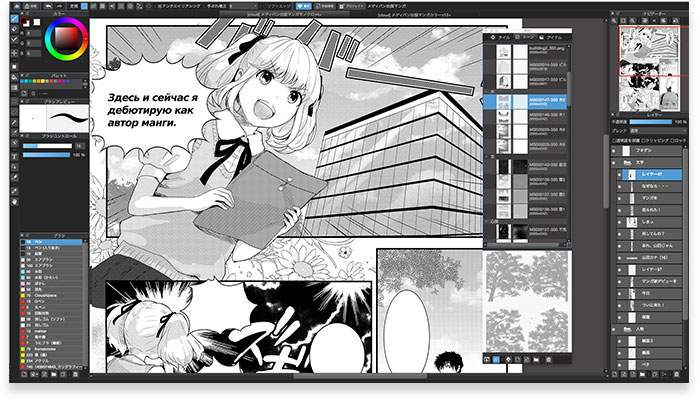

Тона, фоны заднего плана, кисти и шрифты
Имея интернет и возможность загрузить MediBang Paint, вы можете получить доступ к вашим файлам с любого компьютера, планшета, или сматрфона. Сохраните работу дома и откройте её в школе или офисе без помощи внешнего диска или флеш-накопителя.

| Перо | Стандартная кисть. | В настройках могут быть установлены: ширина, размер по давлению, непрозрачность по давлению, принудительное затухание или усиление. |
|---|---|---|
| Аэрограф | Кисть аэрограф. | В настройках можно установить ширину линии, размер по давлению и непрозрачность по давлению. |
| Акварель | Кисть моделирует эффект акварели. | Кисть может быть использована для смешивания цветов используя цвета основного цвета и фона. |
| Размытие | Кисть. | Используя данную кисть можно провести размытие уже существующей линии. |